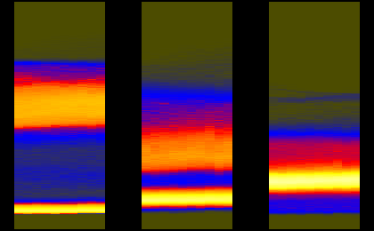
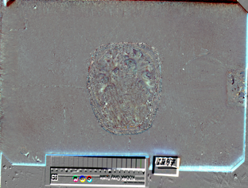
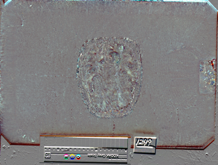
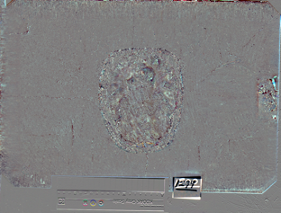
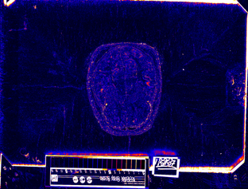
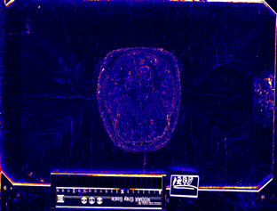
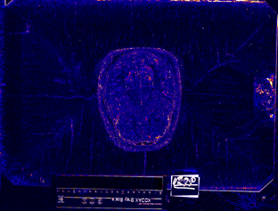

|

|

| |||
| teem | / | nrrd | / |
Visible Female |
Image Differences 4 |
Slice indices and names are:
292: avf1098b.raw.Z 293: avf1098c.raw.Z 294: avf1099a.raw.Z 295: avf1099b.raw.Z
unu join -i histax{R,G,B}.ppm -a 3 | unu crop -min 0 289 0 0 -max M m+9 M M \
| histaxzoom | topng doc/hist4.png
zcat data/avf1098b.raw.Z | sliceprep -o 0.ppm
zcat data/avf1098c.raw.Z | sliceprep -o 1.ppm
zcat data/avf1099a.raw.Z | sliceprep -o 2.ppm
zcat data/avf1099b.raw.Z | sliceprep -o 3.ppm
unu 2op - {0,1}.ppm -t int | cquant | shrink | topng doc/diff4CA.png
unu 2op - {1,2}.ppm -t int | cquant | shrink | topng doc/diff4CB.png
unu 2op - {2,3}.ppm -t int | cquant | shrink | topng doc/diff4CC.png
unu 2op - {0,1}.ppm -t int | nquant | shrink | topng doc/diff4NA.png
unu 2op - {1,2}.ppm -t int | nquant | shrink | topng doc/diff4NB.png
unu 2op - {2,3}.ppm -t int | nquant | shrink | topng doc/diff4NC.png
|  | ||
| hist4.png: Segments of the red, green, and blue axis histograms, for Z slices 289 to 298. | ||
|  |  |  |
| diff4CA.png | diff4CB.png | diff4CC.png |
|  |  |  |
| diff4NA.png | diff4NB.png | diff4NC.png |